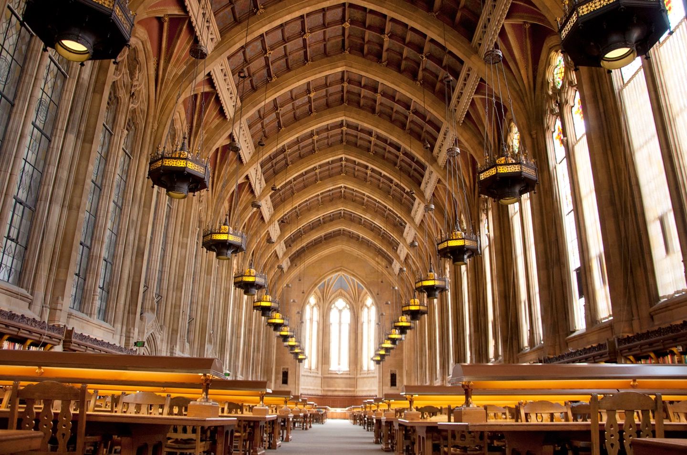

Suzzallo Library is one of the oldest libraries on campus that also is the biggest tourist attraction.
The first image on top is the image of suzzalo library in all its glory.
Tourists often call it the Harry Potter library due to its hanging lights and architecture.
Suzzallo Library's information can be found through the link above.
